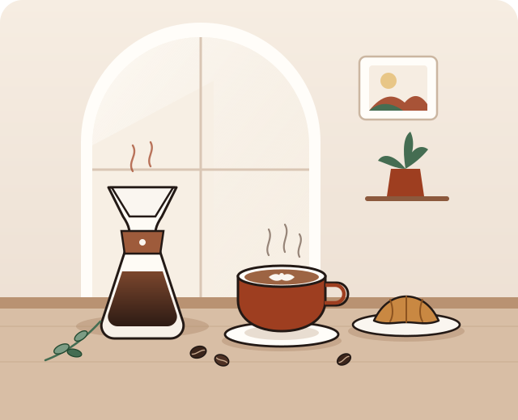
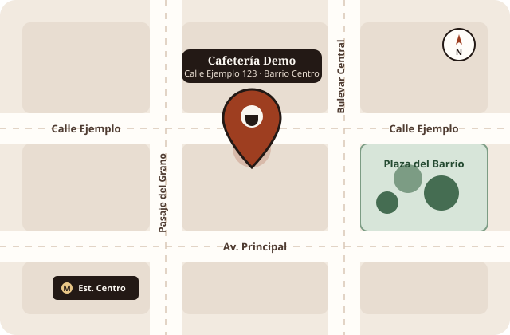

Cafetería Demo · Café de especialidad
Granos tostados en lotes chicos y pausa sin apuro.
Un rincón cálido pensado para disfrutar espresso calibrado, filtrados al momento y pastelería artesanal horneada cada mañana.
- Tostado
- Semanal · origen único
- Barra
- Espresso, V60 y Cold Brew
- Horarios
- Lun–Vie 8 a 20 h · Fin de sem. 9 a 21 h

Nuestra historia
Sobre nosotros
Cafetería Demo nació como una cafetería de barrio con foco en la trazabilidad del grano y la hospitalidad cotidiana. Imaginamos una barra luminosa donde cada extracción se calibra sin solemnidad, acompañada por laminados tibios y panes de masa madre.
Creemos en el ritmo tranquilo de una taza bien preparada: desde elegir microlotes de estación hasta cuidar la temperatura de la leche vegetal o vacuna para que cada sabor hable por sí mismo.
-
Tostado semanal
Lotes pequeños con perfil medio-claro para resaltar dulzor natural, notas a cacao y acidez limpia sin amargor.
-
Agua y molienda
Calibración diaria de molinos, temperatura estable y filtrados manuales en V60 o inmersión en frío de 18 horas.
-
Pastelería del día
Recetas propias horneadas cada mañana con manteca real, fermentación lenta y alternativas veganas y sin TACC.
Postales de la barra
Galería
Ocho ilustraciones originales de nuestra barra, métodos y panadería. Seleccioná cualquier tarjeta para abrir la vista ampliada.
Visitanos
Contacto
Encontranos en el corazón del barrio o escribinos tu consulta desde el formulario.
Horarios y ubicación
- Dirección
- Calle Ejemplo 123, Barrio Centro
- Horarios
- Lunes a viernes: 8:00 a 20:00
Sábados y domingos: 9:00 a 21:00 - Teléfono
- +54 11 0000-0000
- Correo electrónico
- hola@cafeteria-demo.example
